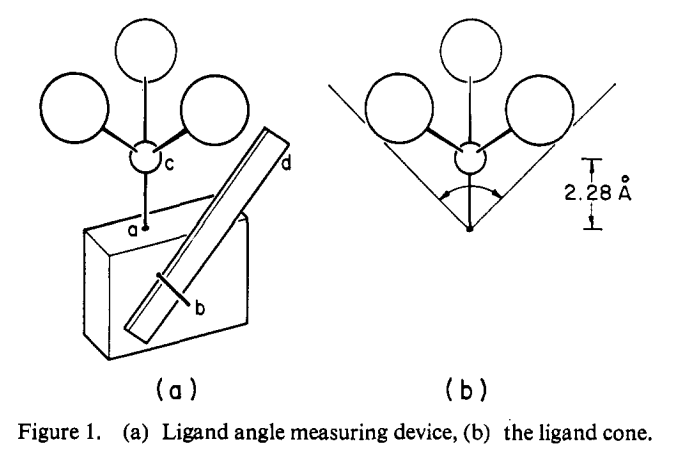
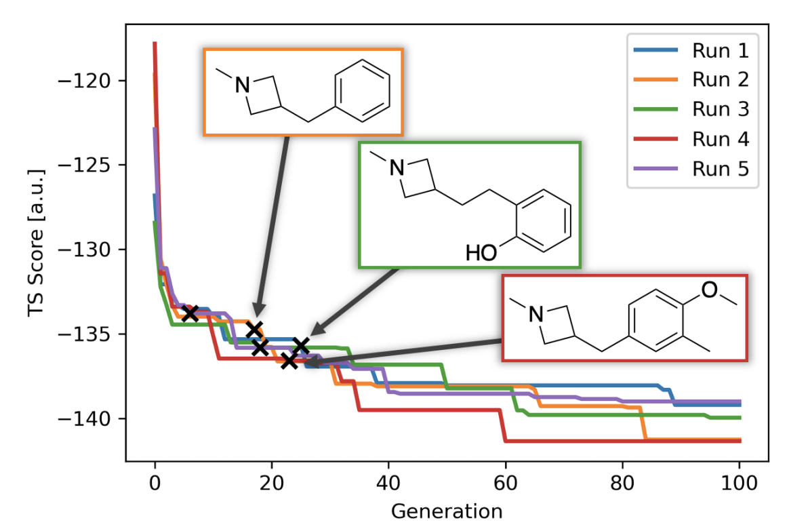
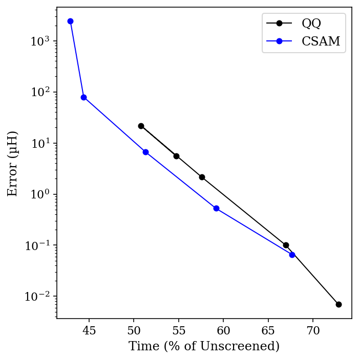

Eric Gilliam, whose work on the history of MIT I highlighted before, has a nice piece looking at Irving Langmuir’s time at the General Electric Research Laboratory and how applied science can lead to advances in basic research.
Gilliam recounts how Langmuir started working on a question of incredible economic significance to GE—how to make lightbulbs last longer without burning out—and after embarking on a years-long study of high-temperature metals under vacuum, not only managed to solve the lightbulb problem (by adding an inert gas to decrease evaporation and coiling the filament to prevent heat loss), but also starting working on the problems he would later become famous for studying. In Langmuir’s own words:
The work with tungsten filaments and gases done prior to 1915 [at the GE laboratory] had led me to recognize the importance of single layers of atoms on the surface of tungsten filaments in determining the properties of these filaments.
Indeed, Langmuir was awarded the 1932 Nobel Prize in Chemistry “for his discoveries and investigations in surface chemistry.”
Langmuir in the GE Research Laboratory.
Nor were lightbulbs the only thing Langmuir studied at GE: he invented a greatly improved form of vacuum pump, invented a hydrogen welding process used to construct vacuum-tight seals, and employed thin films of molecules on water to determine accurate molecular sizes with unprecedented accuracy. Gilliam argues that this tremendous productivity can in part be attributed to the fact that Langmuir’s work was in constant contact with practical problems, which served as a source of scientific inspiration:
In a developed world that is not exactly beset by scarcity and hardship anymore, it is hard to come up with the best areas to explore out of thin air. Pain points are not often obvious. Fundamental researchers can benefit massively from going to a lab mostly dedicated to making practical improvements to things like light bulbs and pumps and observing/asking questions. It is, frankly, odd that we normalized a system in which so many of our fundamental STEM researchers are allowed to grow so disjoint from the applied aspects of their field in the first place.
As [the GE] laboratory developed it was soon recognized that it was not practicable nor desirable that such a laboratory should be engaged wholly in fundamental scientific research. It was found that at least 75 per cent of the laboratory must be devoted to the development of the practical applications. It is stimulating to the men engaged in fundamental science to be in contact with those primarily interested in the practical applications.
Let’s bring in our second thinker. Last weekend, I had the privilege of attending a lecture by Johnathan Bi on Rene Girard and the philosophy of innovation, which discussed (among other things) how a desire for “disruption” above all else actually makes innovation more difficult. To quote Girard’s “Innovation and Repetition,” which Bi discussed at length:
The main prerequisite for real innovation is a minimal respect for the past and the mastery of its achievements, i.e., mimesis. To expect novelty to cleanse itself of imitation is to expect a plant to grow with its roots up in the air. In the long run, the obligation always to rebel may be more destructive of novelty than the obligation never to rebel.
What does this mean? Girard is describing two ways in which innovation can fail. The first is quite intuitive—if we hew to tradition too much, if we have an excessive respect for the past and not a “minimal respect,” we’ll be afraid to innovate. This is the oft-derided state of stagnation.
The second way in which we can fail to innovate, however, is a bit more subtle. Girard is saying that innovation also requires a mastery of the past’s achievements; we can’t simply ignore tradition, we have to understand what exists before we can innovate on top of it. Otherwise we will be, in Girard’s words, like a plant “with its roots up in the air.” All innovation has to occur within its proper context—to quote Tyler Cowen, “context is that which is scarce.”
This might seem a little silly. Innovation, “the introduction of new things, ideas or ways of doing something” (Oxford), at first inspection seems not to depend on tradition at all. But novelty with no hope of improvement over the status quo is simply a cry for attention; wearing one’s shoes on the wrong feet may be unusual, but is unlikely to win one renown as a great innovator.
When innovation, devoid of context, becomes the highest virtue... (I added this to the post a few hours late, sorry.)
What does this mean for scientific innovation, and how does this connect to Gilliam’s thoughts about Langmuir and the GE Research Laboratory? I’d argue that much of our fundamental research today, even that which is novel, lacks the context necessary to be transformatively innovative. Often the most impactful discoveries aren’t those which self-consciously aim to be Science or Nature papers, but those which simply aim to address outstanding problems or investigate anomalies. For instance, our own lab’s interest in hydrogen-bond-donor organocatalysis was initiated by the unexpected discovery that omitting the metal from an ostensibly metal-catalyzed Strecker reaction increased the enantioselectivity. Girard again:
The principle of originality at all costs leads to paralysis. The more we celebrate "creative and enriching" innovations, the fewer of them there are.
Langmuir’s example shows us a different path towards innovation. If we set out to investigate and address real-world problems of known practical import, without innovation in mind, Gilliam and Girard argue that we’ll be more innovative than if we make innovation our explicit goal. I don’t have a concrete policy recommendation to share here, but some of my other blog posts on applied research at MIT and the importance of engineering perhaps hint at what positive change might look like.
In accordance with the themes of this piece, my interpretation of Girard pretty much comes straight from Johnathan Bi. He has a lecture on Youtube where he discusses these ideas: here’s a link to the relevant segment, which is the only part I’ve watched.
When thinking about science, I find it helpful to divide computations into two categories: models and oracles.
In this dichotomy, models are calculations which act like classic ball-and-stick molecular models. They illustrate that something is geometrically possible—that the atoms can literally be arranged in the proper orientation—but not much more. No alternative hypotheses have been ruled out, and no unexpected insights have emerged. A model has no intelligence of its own, and only reflects the thought that the user puts into it.
This isn’t bad! Perhaps the most striking example of the utility of models is Tolman’s original cone angle report, where he literally made a wooden model of different phosphine ligands and measured the cone angle with a ruler. The results are excellent!

Figure 1, from Tolman’s paper.
In contrast, an oracle bestows new insights or ideas upon a petitioner—think the Oracle at Delphi. This is what a lot of people imagine when they think of computation: we want the computer to predict totally unprecedented catalysts, or figure out the mechanism without any human input. We bring our problems to the superintelligence, and it solves them for us.
The Oracle, by Camille Miola (1880). Picture from Wikimedia Commons.
In reality, every simulation is somewhere between these two limiting extremes. No matter how hard you try, a properly executed DFT calculation will not predict formation of a methyl cation to be a low-barrier process—the computational method used understands enough chemistry to rule this out, even if the user does not. On the flip side, even the most sophisticated calculations all involve some form of human insight or intuition, either explicitly or implicitly. We’re still very far away from the point where we can ask the computer to generate the structures of new catalysts (or medicines) and expect reasonable, trustworthy results. But that’s ok; there’s a lot to be gained from lesser calculations! There’s no shame in generating computational models instead of oracles.
What’s crucial, though, is to make sure that everyone—practitioners, experimentalists, and readers—understands where a given calculation falls on the model–oracle continuum. An expert might understand that a semiempirical AIMD study of reaction dynamics is likely to be only qualitatively correct (if that), but does the casual reader? I’ve talked to an unfortunate number of experimental chemists who think a single DFT picture means that we can “predict better catalysts,” as if that were a button in GaussView. The appeal of oracles is seductive, and we have to be clear when we’re presenting models instead. (This ties into my piece about computational nihilism.)
Finally, this piece would be incomplete if I didn’t highlight Jan Jensen and co-workers’ recent work on automated design of catalysts for the Morita–Baylis–Hillman reaction. The authors use a generative model to discover tertiary amines with lower DFT-computed barriers than DABCO (the usual catalyst), and then experimentally validate one of their candidates, finding that it is indeed almost an order-of-magnitude faster than DABCO. It’s difficult to underscore how groundbreaking this result is; as the authors dryly note, “We believe this is the first experimentally verified de novo discovery of an efficient catalyst using a generative model.” On the spectrum discussed above, this is getting pretty close to “oracle.”

Figure 3 from the paper, illustrating discovery of new catalysts.
Nevertheless, the choice of model system illustrates how far the field still has to go. The MBH reaction is among the best-studied reactions in organic chemistry, as illustrated by Singleton’s 2015 mechanistic tour de force (and references therein, and subsequent work), so Jensen and co-workers could have good confidence that the transition state they were studying was correct and relevant. Furthermore, as I understand it, the MBH reaction can be catalyzed by just about any tertiary amine—there aren’t the sort of harsh activity cliffs or arcane structural requirements that characterize many other catalytic reactions. Without either of these factors—well-studied mechanism or friendly catalyst SAR—I doubt this work would be possible.
This point might seem discouraging, but I mean it in quite the opposite way. De novo catalyst design isn’t impossible for mysterious and opaque reasons, but for quite intelligible reasons—mechanisms are complicated, catalysts are hard to design, and we just don’t understand enough about what we’re doing, experimentally or computationally. What Jensen has shown us is that, if we can address these issues, we can expect to start converging on oracular results. I find this very exciting!
Jan Jensen was kind enough to reply to this post on Twitter with a few thoughts and clarifications, which are worth reading.
In science, if you know what you are doing, you should not be doing it. In engineering, if you do not know what you are doing, you should not be doing it.
—Richard Hamming
What’s the difference between science and engineering?
Five years ago, I would have said something along the lines of “engineers study known unknowns, scientists study unknown unknowns” (with apologies to Donald Rumsfeld), or made a distinction between expanding the frontiers of knowledge (science) and settling already-explored territory (engineering).
These thoughts seem broadly consistent with what others think. Boston University’s College of Engineering says:
Engineers are not a sub-category of scientists. So often the two terms are used interchangeably, but they are separate, albeit related, disciplines. Scientists explore the natural world and show us how and why it is as it is. Discovery is the essence of science. Engineers innovate solutions to real-world challenges in society. While it is true that engineering without science could be haphazard; without engineering, scientific discovery would be a merely an academic pursuit.
Science is knowledge based on observed facts and tested truths arranged in an orderly system that can be validated and communicated to other people. Engineering is the creative application of scientific principles used to plan, build, direct, guide, manage, or work on systems to maintain and improve our daily lives.
As I’ve started thinking more about the structure of the modern research system, and what its proper scope and purpose should be, I’ve grown increasingly skeptical of these distinctions. The claim I want to make in this post is that, following the above definitions of engineering, most chemistry is engineering. I don’t think this is bad! In fact, I think that many chemists could benefit from borrowing from an engineering mindset, and should consider incorporating this perspective in their self-conception.
Much of Organic Chemistry is Engineering
I want to return to the BU and NSPE definitions, because I think they’re concise and well-written, and take as gospel that scientists “explore the natural world and show us how and why it is as it is,” while engineers “innovate solutions to real-world challenges in society” (we’ll revisit issues of definition later). In short, developing something you want other people to use makes you an engineer. Which branches of modern organic chemistry are science, and which are engineering?
Method development—one of my core interests—seems like a good candidate for “engineering.” Researchers in this space identify unsolved problems in organic synthesis, develop methods or catalysts to solve these problems, and then (in many cases) advertise, license, & sell their solutions to consumers! (If you don’t believe me, just look at the “Organic Synthesis” tab of the Sigma-Aldrich Professor Product Portal.) If these products weren’t molecules and were instead mechanical gadgets, nothing about this would be obviously scientific.
And the problems chosen are identified almost purely on the basis of what might be useful to potential users. There’s no clearer illustration of this than the recent gold rush to identify synthetic routes to bicyclic arene bioisosteres, which are useful in medicinal chemistry. Five years ago, I can’t think of a single paper making these compounds; now, I can find nine in high-profile journals just from the past year or so (1,
2,
3,
4,
5,
6,
7,
8,
9).
Mechanistic and physical organic chemistry—another love of mine—present a tougher case, since in most cases the outcome of the studies is only knowledge. But I’m still not sure that this makes this field scientific! Let me illustrate why with an example.
An automotive engineer may be confused by why a given transmission is not working. He/she may formulate a hypothesis, take the transmission apart, perform various experiments on its constituent pieces, validate or disprove the initial hypothesis, and generally conduct a thorough mechanistic investigation to understand the origin of the problem. But does that make him/her a scientist?
The answer, I think, is no. The subject matter is not scientific, so no amount of scientific thinking can make the work science. Similarly, I’d argue that investigating the mechanism of a system invented and developed by humans—like a Pd-catalyzed cross-coupling reaction—doesn’t count as science. (Does application of the scientific method automatically make one a scientist? See below for a continued discussion.)
In contrast, something that I think is a truly scientific area of investigation is the study of enzyme structure and function. Despite extensive study and many Nobel prizes, we’re still learning about how enzymes operate and how they achieve such extraordinary reactivity and selectivity. (For an example of this sort of work, see Arieh Warshel’s review on electrostatic effects in enzyme catalysis, and references therein.)
I don’t think I understand all areas of chemistry well enough to fairly judge whether they’re better understood as engineering or science, so I’ll leave this as an exercise to the reader: What motivates your research? Are you mainly driven by a desire to understand the natural order of things, or do you aim to develop technology to make the world better? Both are important, and neither answer is bad—but if your main goal is inventing a new molecule, material, algorithm, or medicine, you might consider thinking of yourself as more of an engineer than a scientist.
Do Different Definitions Clarify Matters?
Since the claim that “most chemistry is engineering” is weird, we might consider alternative definitions to solve this problem.
One appealing definition: “a scientist is anyone who uses the scientific method.” As I discussed above, in the case of the automotive engineer, lots of people use the scientific method who clearly aren’t scientists: engineers, yes, but also detectives, doctors, and many other people. Indeed, according to this definition almost anyone who acquires data to shed light on a problem is “doing science.” So I don’t think this is a very good definition.
Another definition might be: “if you’re closely involved with science, you’re a scientist, even if the work you’re doing isn’t literally pushing the frontiers of knowledge forward.” I’m sympathetic to this definition, but I still find it hard to separate scientists and engineers here. What makes an engineer optimizing a new flow reactor less of a scientist than the chemist optimizing a new catalyst? Are they both scientists? What about people who work on chip design and fabrication, or people who design analytical instruments, or people who use them? I can’t find any clean way to divide scientists from engineers that recapitulates the conventional usage of the terms.
Why Does This Matter?
I think the root of this confusion is that the nature of scientific fields has changed over the past half-century. Organic chemistry hasn’t always been largely engineering; a century ago, the structure of natural products and the nature of the chemical bond were mysteries, truly the domain of science, and these issues were studied by chemists. As we’ve grown to understand our field better and better, our work has shifted from science to engineering—the true mysteries in chemistry are now few and far between, and the challenge facing today’s chemists is how to use centuries of accumulated knowledge to better society. But because of our lineage, we think of ourselves as scientists, and have managed to disguise the true nature of our work so well that we’ve deceived even ourselves.
By this point, it should be obvious that I don’t think science is superior to engineering. In fact, I’m glad to work in an area that’s largely engineering! But the way that an engineer ought to approach their work is different from the way a scientist ought to approach their work. In writing this piece, I came across a 1996 article by Frederick Brooks, who argued that computer science was better understood as an engineering discipline and defended the importance of this claim:
If our discipline has been misnamed, so what? Surely computer science is a harmless conceit. What’s in a name? Much. Our self-misnaming hastens various unhappy trends.
First, it implies that we accept a perceived pecking order that respects natural scientists highly and engineers less so, and that we seek to appropriate the higher station for ourselves. That is a self-serving gambit, hence dubious….
Second, sciences legitimately take the discovery of facts and laws as a proper end in itself. A new fact, a new law is an accomplishment, worthy of publication…. But in design, in contrast with science, novelty in itself has no merit. If we recognize our artifacts as tools, we test them by their usefulness and their costs, not their novelty.
Third, we tend to forget our users and their real problems, climbing into our ivory towers to dissect tractable abstractions of those problems, abstractions that may have left behind the essence of the real problem.
I think Brooks’s summary is simple and elegant. If we judge the value of our work based on the utility of our tools, rather than the novelty of our ideas, we’ll spend our time on different problems and get excited about different advances. There’s room for both scientists and engineers in chemistry—but at the margin, I think our field would benefit from becoming less like science, and more like engineering.
Thanks to Michael Nielsen, Joe Gair, Ari Wagen, and Michael Tartre for editing drafts of this post. Michael Tartre sent me the Richard Hamming quote, and Phil Brooks sent me his grandfather’s article.
Every year, our group participates in a “Paper of the Year” competition, where we each nominate five papers and then duke it out in a multi-hour debate. Looking through hundreds of papers in a few weeks is a great exercise: it helps highlight both creativity and its absence, and points towards where the field’s focus might turn next.
My picks are very personal—how could they not be?—and also biased towards towards experimental chemistry, owing to what our group focuses on. So, don’t take this as any attempt towards creating an objective list.
All the papers I really liked are listed below, with my top five listed in bold:
Pd-catalyzed C–H hydroxylation (Yu). Addresses a lot of my misgivings about C–H activation: directed by carboxylic acids, silver-free, scalable, and uses aqueous H2O2 (perhaps the best oxidant possible, after air).
Studying the mechanism of enantioselective enzymatic C–H amination (Yang Yang, Peng Liu). Surprisingly, radical rebound is enantiodetermining! I remember being puzzled by the mechanism of this reaction when it was first published; this is a very satisfying resolution. Cool isotope studies & ab initio molecular dynamics seal the deal. Pick 4/5.
wB97X-3c, the latest “composite method” (Grimme). If the reported speed and accuracy are true “in the wild,” every computational chemist ought to use this method. Pick 5/5.
For almost all Hartree–Fock-based computational methods, including density-functional theory, the rate-limiting step is calculating electron–electron repulsion. (This isn’t true for semiempirical methods, where matrix diagonalization is generally rate-limiting, or for calculations on very large systems.)
When isolated single molecules are the subject of calculations (as opposed to solids or periodic systems), most programs describe electronic structure in terms of atom-centered basis sets, which reduces the electron–electron repulsion problem to one of calculating electron repulsion integrals (ERIs) over quartets of basis shells. Framed this way, it becomes obvious why ERIs are the bottleneck: the number of ERIs will scale as O(N4), meaning that millions of these integrals must be calculated even for relatively small molecules.
I tried to get DALL-E to make a visual representation of integral screening; this was the best I got.
One big advance in electronic structure calculations was the development of integral screening techniques, the most popular of which is the “Schwartz inequality” (derived from the Cauchy–Schwartz inequality, but actually developed by Mario Häser and Reinhart Ahlrichs [EDIT: This is wrong, see correction at end!]). If we denote an ERI over shells A, B, C, and D as (AB|CD), then the Schwartz inequality says:
(AB|CD) ≤ (AB|AB)0.5 (CD|CD)0.5
This is pretty intuitive: each shell pair will interact with itself most, since it has perfect overlap with itself, and so the geometric mean of the interaction of each shell pair with itself is an upper bound for the interaction between the two shell pairs. (Why would (AB|AB) ever be a small value? Well, A and B might be super far away from each other, and so the “shell pair” has very little overlap is just negligible.)
This result is very useful. Since there are many fewer integrals of the form (AB|AB), we can start by calculating all of those, and then use the resulting values to “screen” each shell quartet. If the predicted value is less than some predefined cutoff, the integral is skipped. While these screening methods don’t help much with small molecules, where all of the shells are pretty close to each other, they become crucial for medium-sized molecules and above.
(What’s the cutoff value? Orca defaults to 10-8, Gaussian to 10-12, Psi4 to 10-12, and QChem to 10-8–10-10 depending on the type of calculation.)
The Schwartz inequality neglects, however, another way in which (AB|CD) might be very small: if (AB| and |CD) aren’t independently negligible, but are just really far away from each other. One elegant way to address this (out of many) comes from recent-ish work by Travis Thompson and Christian Ochsenfeld. They define an intermediate quantity M for each pair of shells, derived from different high-symmetry integrals:
MAC := (AA|CC) / ( (AA|AA)0.5 (CC|CC)0.5 )
MAC intuitively represents the distance between the two shells, and is guaranteed to be in the range [0,1]. Thompson and Ochsenfeld then use this quantity to propose an estimate of a shell quartet’s value:
This is no longer a rigorous upper bound like the Schwartz inequality, but it’s a pretty good estimate of the size of the integral.
How much of a difference does this make in practice? To test this, I ran HF/STO-3G calculations on dodecane in the fully linear configuration. As shown by Almlöf, Faegri, and Korsell, linear molecules benefit the most from integral screening (since the shells are on average farther apart), so I hoped to see a sizable effect without having to study particularly large molecules.
Almlöf, Faegri, and Korsell, Figure 5. This paper is terrific.
I compared both the Schwartz (“QQ”) bound and Ochsenfeld’s CSAM bound for integral thresholds ranging from 10-9 to 10-13, and compared the result to a calculation without any integral screening. The total time for the calculation, as a percent of the unscreened time, is plotted below against the error in µHartree (for the organic chemists out there, 1 µH = 0.00063 kcal/mol):

Comparing CSAM and QQ.
A few things are apparent for this data. First, even tight thresholds lead to dramatic speedups relative to the unscreened calculation—and with minimal errors. Secondly, the CSAM bound really does work better than the QQ bound (especially if you ignore the high-error 10-9 threshold data point). For most threshold values, using CSAM leads to about a 20% increase in speed, at the cost of a 3-fold increase in an already small error. Viewed visually, we can see that the Pareto frontier for CSAM (blue) is just closer to the optimal bottom-left corner than the corresponding frontier for QQ (black).
I hope this post serves to explain some of the magic that goes on behind the scenes to make “routine” QM calculations possible. (If you thought these tricks were sneaky, wait until you hear how the integrals that aren’t screened out are calculated!)
CORRECTION: In this post, I credited Mario Häser and Reinhart Ahlrichs with developing the Cauchy–Schwartz method for integral screening. A (famous) theoretical chemist who shall remain nameless reached out to me to correct the record—in fact, Almlöf included an overlap-based screening method in his landmark 1982 paper. To the untrained eye, this appears unrelated to ERI-based screening, but we are using Gaussian basis sets and so “one can therefore write the integrals in terms of overlaps,” meaning that what looked like a different expression is actually the same thing. (Section 9.12 of Helgaker/Jorgensen/Olsen's textbook Molecular Electronic Structure Theory, a book I sadly do not own, apparently discusses this more.)
The professor traced this back to Wilhite and Eumena in 1974, and ultimately back to the work of Witten in the 1960s. It is a pleasure to get corrected by those you respect, and I welcome any readers who find errors in my writing to reach out; I will do my best to respond and take blame as appropriate.